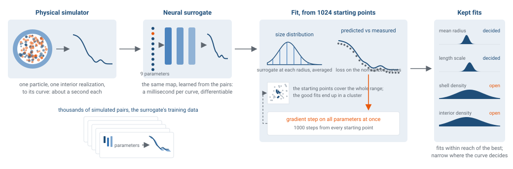

A simulated SAXS curve from a population of lipid nanoparticles, analysed with the released code from the paper. A neural network that imitates the physical simulator (a surrogate) predicts the curve of a particle in a millisecond, so the fit can be started from a thousand points. The fits that match the curve equally well show which structural parameters the curve fixes and which it leaves open.
The simulated particle and its curve. A spherical particle has a uniform shell and an interior whose density varies on a characteristic length scale; a sample contains particles of many sizes. One random interior is kept fixed while the parameters change. White is the solvent density, blue is denser, orange less dense. The curve is the surrogate network's prediction, averaged over the size distribution as in the fit.
Cross-section, 100 nm wide
This materialKept curve
LeftRight

The physical simulator builds a particle, interior realization included, and computes its curve in about a second. The surrogate network, trained on its output, does the same in a millisecond and is differentiable, so a fit can follow the gradient. The fit averages the network over the size distribution, compares with the measured curve and adjusts all parameters together. It is started from a thousand points spread over the parameter space; the fits that reach the curve equally well are kept. Where they agree, the curve has decided; where they spread, it has not. Schematic.
Simulated measurementKept fitsSelected fit
Other restartsKept fits